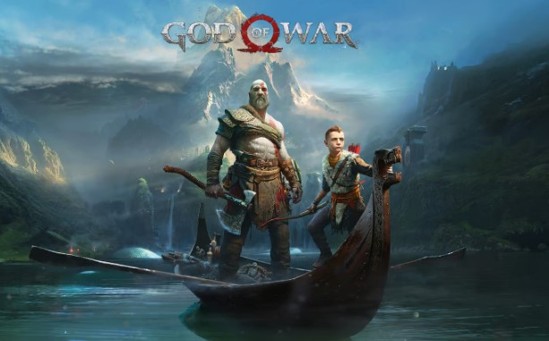
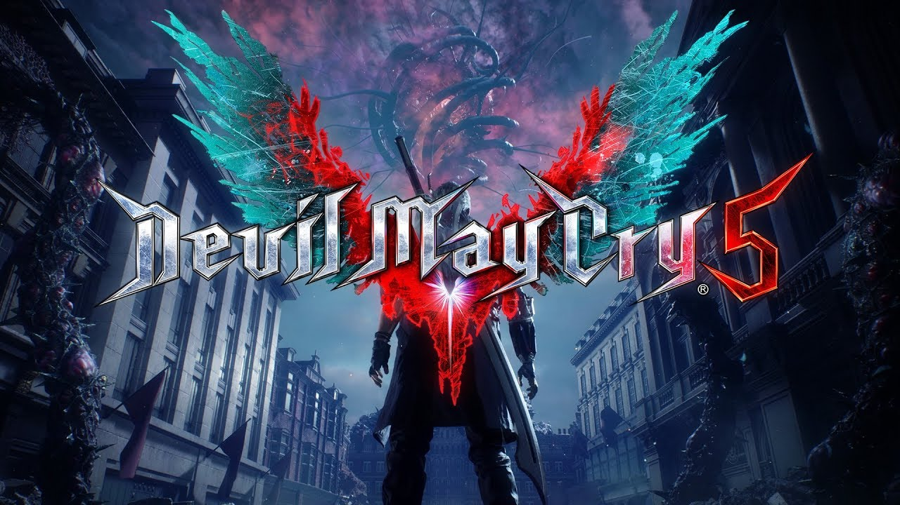
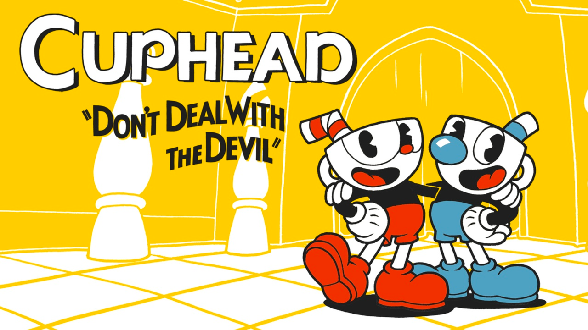
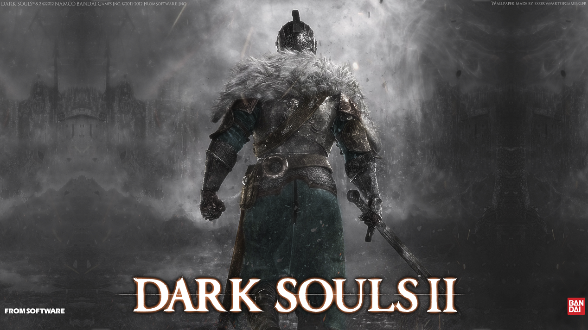

Elden Ring
O NOVO RPG DE AÇÃO E FANTASIA.
Levante-se, Maculado, e seja guiado pela graça para portar o poder do Anel Prístino e se tornar um Lorde Prístino nas Terras Intermédias.
Sekiro Shadows Diw Twice

Em Sekiro, você é o 'lobo de um braço só', um guerreiro desfigurado e desgraçado, resgatado da beira da morte. Jurado para proteger um jovem lorde descendente de uma antiga linhagem de sangue, você vira alvo de muitos inimigos perigosos, incluindo o temido clã Ashina.
God of War
Com a vingança contra os deuses do Olimpo em um passado distante, Kratos agora vive como um mortal no reino dos deuses e monstros nórdicos. É nesse mundo duro e implacável que ele deve lutar para sobreviver... e ensinar seu filho a fazer o mesmo.
Resident Evil 4
Sobrevivência é apenas o começo. Seis anos se passaram desde o desastre biológico em Raccoon City. Leon S. Kennedy, um dos sobreviventes, segue o rastro da raptada filha do presidente até uma vila europeia isolada, onde há algo terrivelmente errado com os habitantes.
DARK SOULS™: REMASTERED

Mas então, fez-se o fogo. Experimente novamente o jogo aclamado pela crítica e definidor de gênero que foi o início tudo. Belamente remasterizado, volte a Lordran com detalhes em alta definição a 60fps.
The Witcher® 3: Wild Hunt

Você é Geralt de Rívia, mercenário matador de monstros. Você está em um continente devastado pela guerra e infestado de monstros para você explorar à vontade. Sua tarefa é encontrar Ciri, a Criança da Profecia — uma arma viva que pode alterar a forma do mundo.
Resident Evil 2

Um vírus maligno toma conta dos residentes de Raccoon City em setembro de 1998, afundando a cidade no caos enquanto zumbis comedores de carne humana vagam pelas ruas em busca de sobreviventes. Um surto de adrenalina sem comparação, uma história instigante e horrores/p>
Devil May Cry 5
Um novo episódio na lendária série de ação, Devil May Cry 5 traz junto sua clássica mistura de ação turbinada com personagens originais de outro mundo e a mais nova tecnologia de jogos Capcom para trazer uma obra de arte de ação e aventura visualmente inovadora.
CUPHEAD
Cuphead é um jogo de ação e tiros clássico, com enorme ênfase nas batalhas de chefes. Inspirado nas animações infantis da década de 1930, os visuais e efeitos sonoros foram minuciosamente recriados com as mesmíssimas técnicas dessa era, com destaque para desenhos feitos à mão, fundos em aquarela e gravações originais de jazz.
Dark Souls II
Desenvolvido pela FROM SOFTWARE, DARK SOULS™ II é a tão esperada sequência do sucesso avassalador de 2011, Dark Souls™. A experiência única de RPG de ação à moda antiga cativou a imaginação de jogadores no mundo inteiro, com desafio incrível e emoções intensas.
Dark Souls III

Premiado como "Melhor RPG" na Gamescom 2015 e com mais de 35 prêmios e indicações na E3 2015, DARK SOULS™ III continua a elevar o patamar de uma das séries mais inovadoras e aclamadas pela crítica. Com o fogo se apagando e o mundo caindo em ruínas, você precisa se aventurar em um universo repleto de inimigos e ambientes colossais. Jogadores entrarão em um mundo de trevas e atmosfera épica, com uma jogabilidade mais ágil e combates mais intensos. Agora só restam cinzas... Prepare-se para abraçar a escuridão mais uma vez!
Bloodborne

Bloodborne é um RPG eletrônico de ação produzido pela FromSoftware e publicado pela Sony Computer Entertainment a 24 de Março de 2015 em exclusivo para a PlayStation 4, sendo o quarto game da serie Souls. Bloodborne foi realizado por Hidetaka Miyazaki, diretor de Demon's Souls e Dark Souls.
Confira todos os Goty
God of War
O jogo da Santa Monica Studio desbancou o favorito Red Dead Redemption, além de títulos como Marvel's Spider-Man, Celeste, Assassin's Creed Odyssey e Monster Hunter World.
Sekiro Shadows Diw Twice
Sekiro: Shadows Die Twice garantiu para a FromSoftware (Dark Souls, Bloodborne) o título de jogo do ano pelo The Game Awards 2019.
The Last Of Us II
The Last of Us Part II recebeu o maior número de prêmios na história do evento, vencendo em sete categorias. Quatro jogos — Among Us, Final Fantasy VII Remake, Ghost of Tsushima e Hades — ganharam dois prêmios. Entre seus dois jogos vencedores, a Sony Interactive Entertainment ganhou um total de nove prêmios, enquanto que a InnerSloth, Square Enix, Supergiant Games e Xbox Game Studios ganharam dois.
It Takes Two
It Takes Two foi muito bem recebido pela crítica especializada e venceu múltiplos prêmios, incluindo o de Jogo do Ano no The Game Awards 2021 e no 25.º D.I.C.E. Awards. O jogo foi um sucesso comercial, vendendo mais de 7 milhões de cópias até julho de 2022.
Elden Ring
O jogo eletrônico foi aclamado pela crítica, com elogios sendo direcionados à sua jogabilidade e ao projeto de mundo aberto. O jogo vendeu mais de 17,5 milhões de cópias ao redor do mundo até o fim de setembro de 2022. Elden Ring ganhou o Golden Joystick Award como melhor jogo do ano em 2022 e o The Game Awards na mesma categoria também em 2022 (incluindo outros três prêmios).
Baldur's Gate 3
Baldur's Gate III é um jogo eletrônico de RPG desenvolvido e publicado pela Larian Studios. É o terceiro jogo principal da série Baldur's Gate, que é baseada no sistema de RPG de mesa Dungeons & Dragons, dentro do cenário de Forgotten Realms. Parte do jogo foi lançada em acesso antecipado para Windows, macOS e Stadia em 6 de outubro de 2020. O jogo permaneceu em acesso antecipado até seu lançamento completo para Windows em 3 de agosto de 2023. Versões para PlayStation 5 e macOS foram lançadas em 6 de setembro de 2023 e para Xbox Series X/S em 8 de dezembro de 2023.
Baldur's Gate III foi aclamado pela crítica, com elogios à jogabilidade, à narrativa, à quantidade de conteúdo e às possibilidades de escolha do jogador.